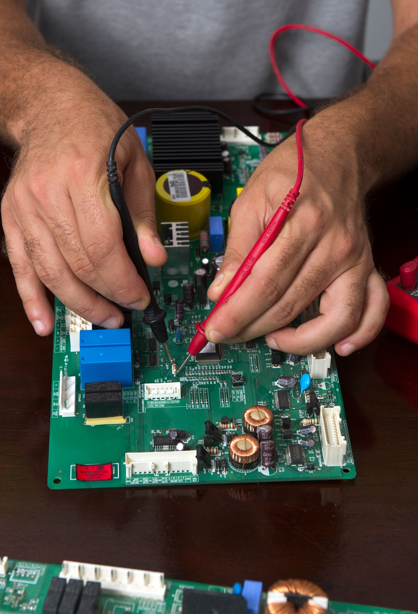

The fridge was the bug
The brief
A 14-qubit chip whose T₁ would not rise past roughly 40 µs on any qubit. Five months of work had gone into blaming the silicon, and a chip redesign was already budgeted. The practice was called in to confirm the device was at fault before the redesign money was spent.
What was done
The device was not touched for the first cooldown. Instead: a stage-by-stage thermal audit under full wiring load. The mixing chamber ran warm whenever the full loom was connected; the output loom was found unanchored between the cold plate and the mixing chamber, and one input line arrived unfiltered. The loom was re-anchored at every stage and filtering added at the cold plate — then the same chip was measured again.
The outcome
On the same silicon, T₁ went from a median of 41 µs to 212 µs — the distribution is printed below, because the distribution is the result. The chip redesign was cancelled and its budget returned. The client's Head of Hardware's testimonial is attached to this file on the log page.
T₁ distribution · K-07 “Aava” · Same chip, before and after the wiring work
| Measurement | T₁ median | Spread (IQR) | Qubits measured | Date |
|---|---|---|---|---|
| As delivered — loom as found | 41 µs | 28–63 µs | 12 of 14 | Jan 2026 |
| After re-anchoring & filtering | 212 µs | 168–257 µs | 14 of 14 | Mar 2026 |
